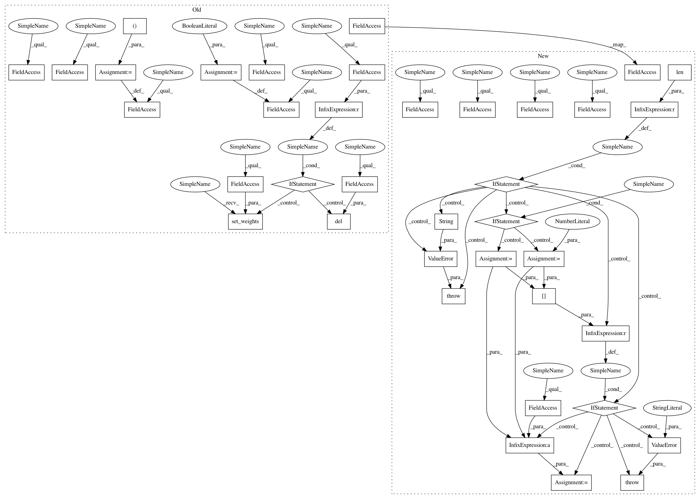

023331ec2a7b0086abfc81eca16c84a1692ee653,keras/layers/convolutional.py,Convolution2D,build,#Convolution2D#Any#,420
Before Change
def build(self, input_shape):
if self.data_format == "channels_first":
stack_size = input_shape[1]
self.W_shape = (self.nb_filter, stack_size, self.nb_row, self.nb_col)
elif self.data_format == "channels_last":
stack_size = input_shape[3]
self.W_shape = (self.nb_row, self.nb_col, stack_size, self.nb_filter)
else:
raise ValueError("Invalid data_format:", self.data_format)
self.W = self.add_weight(self.W_shape,
initializer=self.init,
name="{}_W".format(self.name),
regularizer=self.W_regularizer,
constraint=self.W_constraint)
if self.bias:
self.b = self.add_weight((self.nb_filter,),
initializer="zero",
name="{}_b".format(self.name),
regularizer=self.b_regularizer,
constraint=self.b_constraint)
else:
self.b = None
if self.initial_weights is not None:
self.set_weights(self.initial_weights)
del self.initial_weights
self.built = True
def get_output_shape_for(self, input_shape):
if self.data_format == "channels_first":
rows = input_shape[2]
After Change
self.pointwise_constraint = pointwise_constraint
def build(self, input_shape):
if len(input_shape) < 4:
raise ValueError("Inputs to `SeparableConv2D` should have rank 4. "
"Received input shape:", str(input_shape))
if self.data_format == "channels_first":
channel_axis = 1
else:
channel_axis = 3
if input_shape[channel_axis] is None:
raise ValueError("The channel dimension of the inputs to "
"`SeparableConv2D` "
"should be defined. Found `None`.")
input_dim = int(input_shape[channel_axis])
depthwise_kernel_shape = (self.kernel_size[0],
self.kernel_size[1],
input_dim,
self.depth_multiplier)
pointwise_kernel_shape = (1, 1,
self.depth_multiplier * input_dim,
self.filters)
self.depthwise_kernel = self.add_weight(
depthwise_kernel_shape,
initializer=self.depthwise_initializer,
name="depthwise_kernel",
regularizer=self.depthwise_regularizer,
constraint=self.depthwise_constraint)
self.pointwise_kernel = self.add_weight(
pointwise_kernel_shape,
initializer=self.pointwise_initializer,
name="pointwise_kernel",
regularizer=self.pointwise_regularizer,
constraint=self.pointwise_constraint)
if self.use_bias:
self.bias = self.add_weight((self.filters,),
initializer=self.bias_initializer,
name="bias",
regularizer=self.bias_regularizer,
In pattern: SUPERPATTERN
Frequency: 3
Non-data size: 38
Instances
Project Name: keras-team/keras
Commit Name: 023331ec2a7b0086abfc81eca16c84a1692ee653
Time: 2017-02-09
Author: francois.chollet@gmail.com
File Name: keras/layers/convolutional.py
Class Name: Convolution2D
Method Name: build
Project Name: keras-team/keras
Commit Name: 023331ec2a7b0086abfc81eca16c84a1692ee653
Time: 2017-02-09
Author: francois.chollet@gmail.com
File Name: keras/layers/convolutional.py
Class Name: Convolution2D
Method Name: build
Project Name: keras-team/keras
Commit Name: 023331ec2a7b0086abfc81eca16c84a1692ee653
Time: 2017-02-09
Author: francois.chollet@gmail.com
File Name: keras/layers/convolutional.py
Class Name: Convolution1D
Method Name: build
Project Name: keras-team/keras
Commit Name: 023331ec2a7b0086abfc81eca16c84a1692ee653
Time: 2017-02-09
Author: francois.chollet@gmail.com
File Name: keras/layers/core.py
Class Name: TimeDistributedDense
Method Name: build